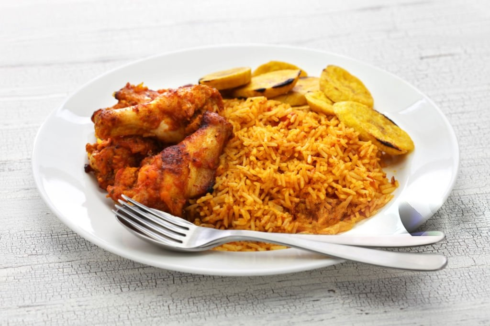

Let me walk you through a short history on the origin of Jollof Rice.
This is what your finished product should look like

Place chicken drumsticks in a large Dutch oven over medium heat. Add 1/2 onion, ginger, crushed bouillon cubes, garlic, curry powder, 1 teaspoon herbes de Provence, black pepper, and cayenne pepper. Mix well. Cook until chicken starts sticking to the bottom, about 5 minutes. Pour in water, mix, cover the pot, and bring to a gentle simmer; cook for 15 minutes. Remove from heat.
Transfer chicken to a baking dish using a slotted spoon. Strain cooking liquid through a fine-mesh sieve. Reserve 1 1/2 cups liquid. Discard solids.
Preheat oven to 400 degrees F (200 degrees C).
Bake chicken in the preheated oven until no longer pink in the middle and the juices run clear, about 30 minutes. An instant-read thermometer inserted into the thickest part should read 165 degrees F (74 degrees C).
Heat 3 tablespoons vegetable oil in a large pot over medium-low heat and cook 1/2 onion until soft and translucent but not browned, about 5 minutes. Add tomato sauce; cook and stir until slightly thickened and infused into the oil, 5 to 7 minutes.
Stir reserved chicken broth, coconut milk, 1 teaspoon herbes de Provence, salt, and pepper into the pot. Bring to a simmer; add rice. Cook, stirring often, until rice is almost tender, 15 to 20 minutes. Add frozen vegetables and continue cooking until rice is tender and creamy, about 5 minutes.
Heat 1/2 cup of canola oil in a nonstick pan over medium heat. Add plantains and fry on both sides until golden and crispy, about 2 to 3 minutes per side. Drain on paper towels. Garnish jollof rice with friend plantains and serve with chicken.
Serve and Enjoy!!!
Back to Main Page